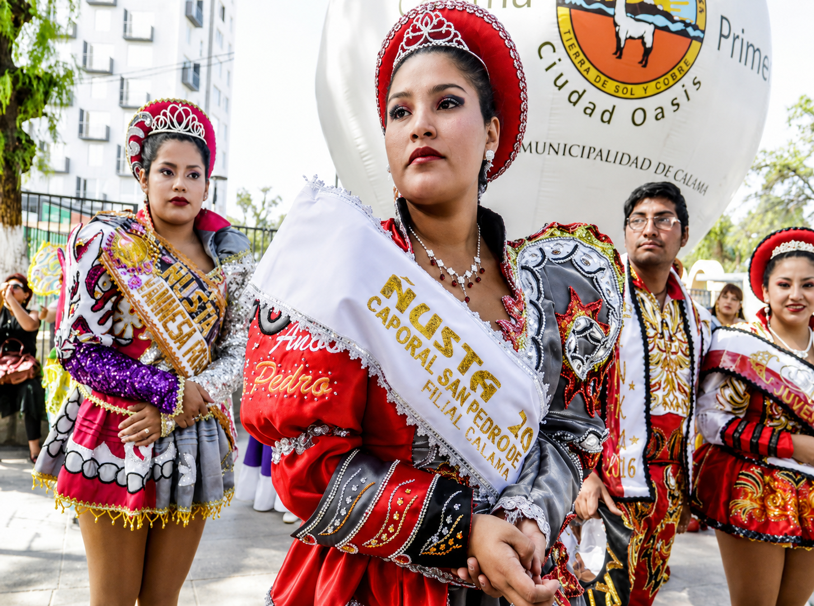
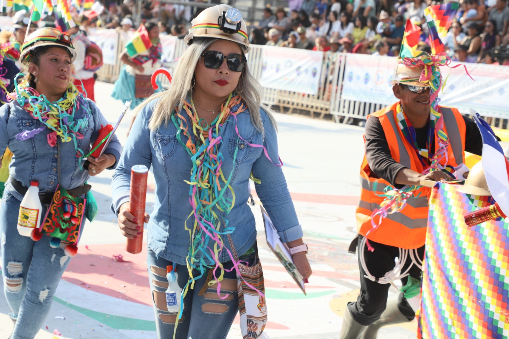
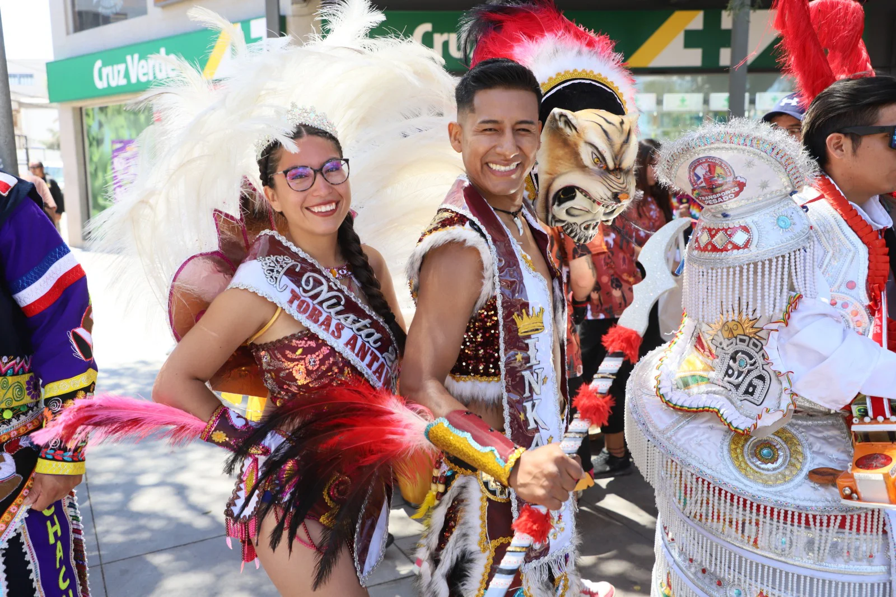

Vive la música, danza y tradición del Alto Loa en una experiencia cultural única en el corazón del desierto.
Explorar actividadesChiu Chiu, Alto Loa
15 - 17 Agosto
Música, danza y gastronomía
Cultural y comunitaria
El Festival del Sol Andino celebra las tradiciones culturales y espirituales del norte de Chile mediante música, danza, gastronomía y actividades comunitarias que conectan a los visitantes con la esencia del desierto y las comunidades del Alto Loa.




Presentaciones tradicionales con instrumentos típicos y agrupaciones culturales del norte.
Degustación de platos típicos y sabores tradicionales del territorio atacameño.
Actividades culturales y observación del cielo del desierto bajo una experiencia única.
Conecta con tradiciones reales del Alto Loa y comunidades del desierto.
Descubre la esencia cultural y espiritual del norte de Chile.
Vive experiencias alejadas del turismo tradicional y masivo.
Explora rutas culturales, paisajes únicos y tradiciones auténticas del Alto Loa junto a Oasis Calama.
Volver al inicio